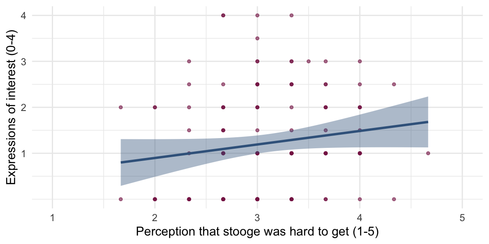
Interpreting Models
Parameter estimates, confidence intervals and p-values
Professor Andy Field
University of Sussex


|
Learning outcomes
Be able to interpret
- Parameter estimates
- Standardized parameter estimates
- Their confidence intervals
- p-values


Interpreting parameter estimates
Raw effect size (b)
- Does playing hard to get work?1
- Heterosexual participants conversed with an opposite-sex confederate over Instant Messenger for 8 mins
- Interest: Final message coded for the number of expressions of romantic interest (range 0 to 4)
- Hard to get: 3 items rated 1 (not at all) and 5 (very much so)
- The other participant is hard to get
- Mate value: 4 items rated 1 (not at all) and 5 (very much so)
- I perceive the other participant as a valued mate
The model
\[ \text{interest}_i = \hat{b}_0 + \hat{b}_1\text{hard to get}_i +e_i \]
| Parameter | Coefficient | SE | 95% CI | t(126) | p |
|---|---|---|---|---|---|
| (Intercept) | 0.31 | 0.52 | (-0.73, 1.35) | 0.59 | 0.556 |
| hard to get | 0.29 | 0.17 | (-0.04, 0.62) | 1.76 | 0.080 |
- As the perception that the other person was hard to get increased by 1 (on a scale from 1-5), 0.29 more expressions of interest were made.
- You’d need perceptions of ‘hard to get’ to increase by \(\frac{1}{0.29}\) = 3.40 on a 5-point scale to get 1 additional expression of interest.
Standardized parameter estimates
Standardized beta (\(\beta\))
Statis-tip
- Standardized parameter estimates express effects in standard deviation units
- With one predictor it is the Pearson correlation coefficient.
- Can be compared across studies that used different measures of the same variables
- It is like estimating parameters from the data when they have been converted to z-scores (i.e., Mean = 0, SD = 1)
The model
\[ z(\text{interest})_i = \hat{b}_0 + \hat{b}_1z(\text{hard to get})_i +e_i \]
| Parameter | Coefficient | SE | 95% CI | t(126) | p |
|---|---|---|---|---|---|
| (Intercept) | -1.54e-16 | 0.09 | (-0.17, 0.17) | -1.76e-15 | > .999 |
| hard to get | 0.16 | 0.09 | (-0.02, 0.33) | 1.76 | 0.080 |
- As the perception that the other person was hard to get increased by 1 standard deviation, expressions of interest changed by 0.16 standard deviations.
Confidence intervals
Confidence intervals
Statis-tip
What confidence intervals are:
- Intervals that contain the ‘true’ population value of the parameter in 95% of samples
- They are related to the uncertainty in our parameter estimate
- Wide intervals (small sample) = lots of uncertainty
- Narrow intervals (large sample) = less uncertainty
The danger zone!
What confidence intervals are NOT:
- There is NOT a 95% probability that a given interval contains the population value.
- It is p = 0 or p = 1, but you can’t know which!
- They do NOT reflect confidence in the value of the population parameter.
A practical solution
Statis-tip
We make an assumption (that could be wrong)
- We assume that our sample is one of the 95% that yields a confidence interval containing the true value of the parameter.1
- We acknowledge that this assumption will be incorrect 5% of the time.2
Under this assumption …
- The confidence interval can be interpreted as containing the true (population) value of the parameter.
Report
Assuming that this sample is one of the 95% that yields a confidence interval containing the true value of the parameter the effect could be as small as [value of lower boundary] or as large as [value of upper boundary]
Back to Birnbaum
\[ \text{interest}_i = \hat{b}_0 + \hat{b}_1\text{hard to get}_i +e_i \]
| Parameter | Coefficient | SE | 95% CI | t(126) | p |
|---|---|---|---|---|---|
| (Intercept) | 0.31 | 0.52 | (-0.73, 1.35) | 0.59 | 0.556 |
| hard to get | 0.29 | 0.17 | (-0.04, 0.62) | 1.76 | 0.080 |
- Assuming that this sample is one of the 95% that yields a confidence interval containing the true value of the parameter …
- As the perception that the other person was hard to get increases by 1, the corresponding change in the number of expressions made could be as small as -0.04. In other words, there are fewer expressions of interest.
- As the perception that the other person was hard to get increases by 1, the corresponding change in the number of expressions made could be as large as 0.62. In other words, there are more expressions of interest.
- It’s plausible that as the perception that the other person was hard to get increases by 1, there is no change in expressions of interest (b = 0).
- The assumption at the start might be false
Testing hypotheses
Using parameters to test hypotheses
- Parameters represent effects:
- Relationships between variables
- Differences between means
- Parameters reflect hypotheses:
- \(H_0\): \(b = 0\) or \(b_1 = b_2\)
- \(H_1\): \(b \ne 0\) or \(b_1 \ne b_2\)
- All parameters have an associated sampling distribution
- For any parameter, we can work out the probability of getting at least the value we have if the null hypothesis is true (e.g., if \(b = 0\), or \(b_1 \ne b_2\))
- p < 0.05 is typically used as a threshold for ‘significance’
\[ t = \frac{b}{SE_b} \]
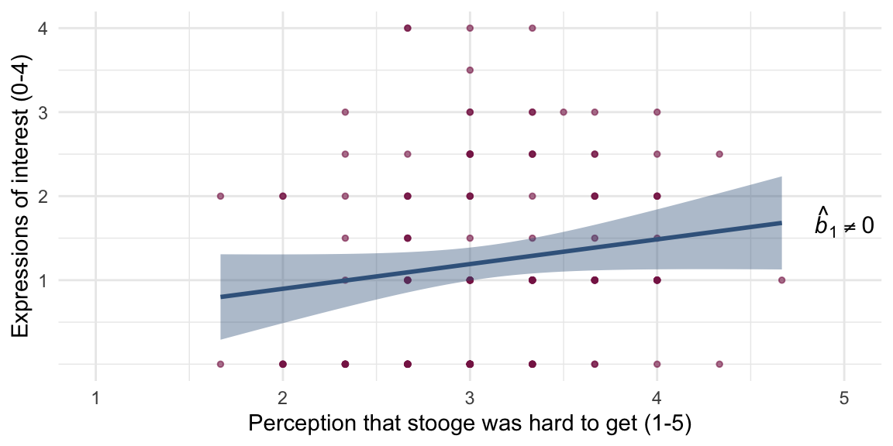
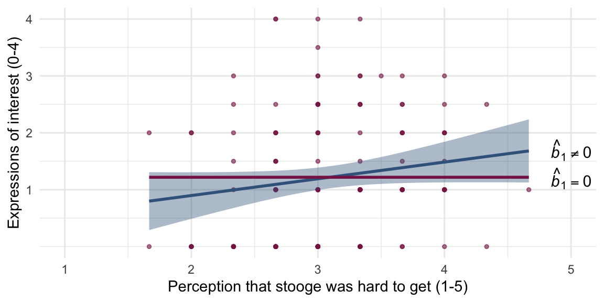
What is a p-value?
Hypothesis
- H0: Alice does not want to date Zach
- H1: Alice wants to date Zach
Test statistic
Humour rating = 5
What is a p-value?
Humour rating = 5
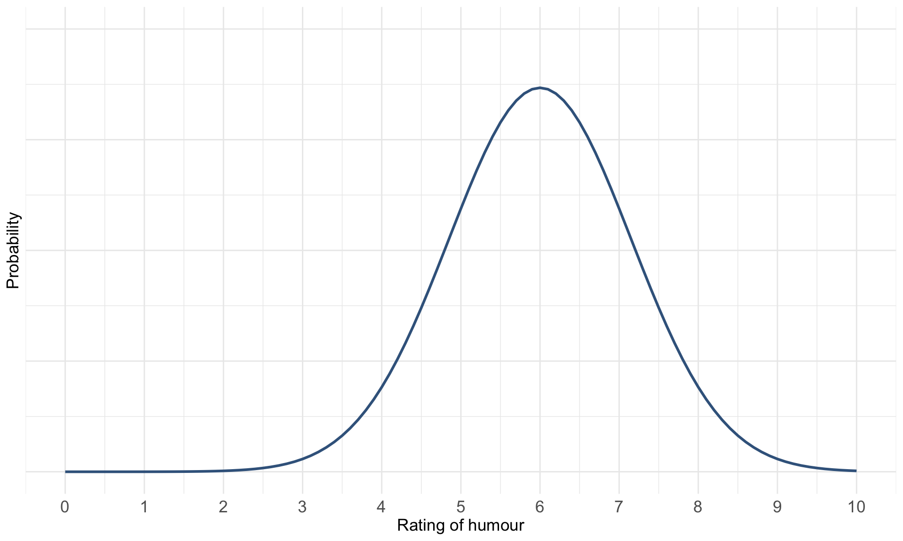
What is a p-value?
Humour rating = 5
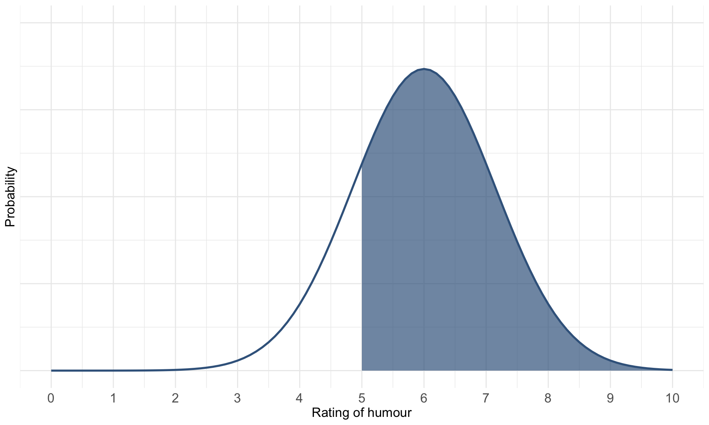
What is a p-value?
Humour rating = 5

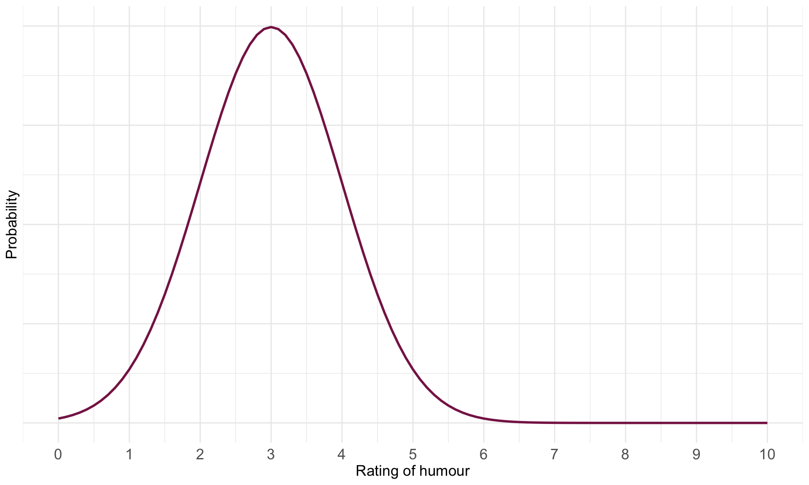
What is a p-value?
Humour rating = 5

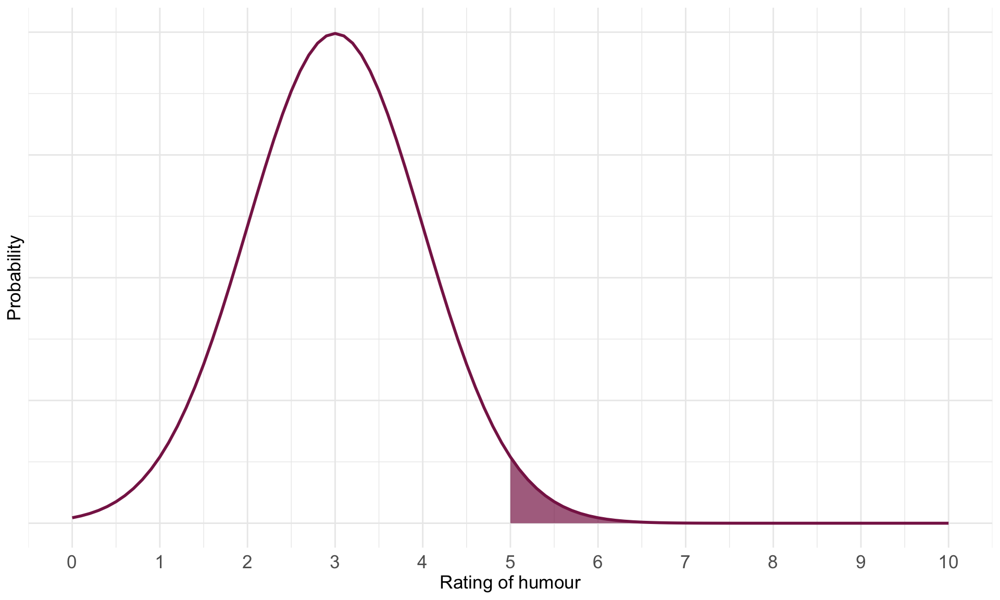
The p-value
Statis-tip
The p-value IS:
- The probability of getting a test statistic at least as big as the one you have observed given that the null hypothesis is true.
The danger zone!
The p-value is NOT:
- The probability of a chance result
- The probability that H1 is true
- The probability that H0 is true
Problems with p
Teddy bear therapy
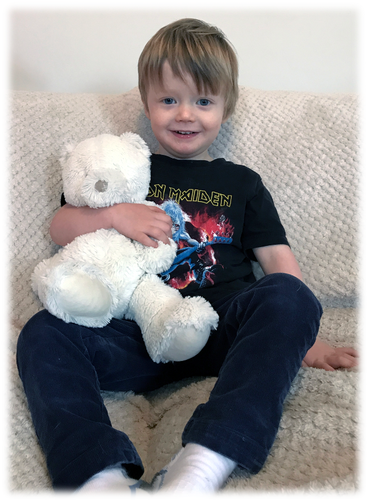
Control group
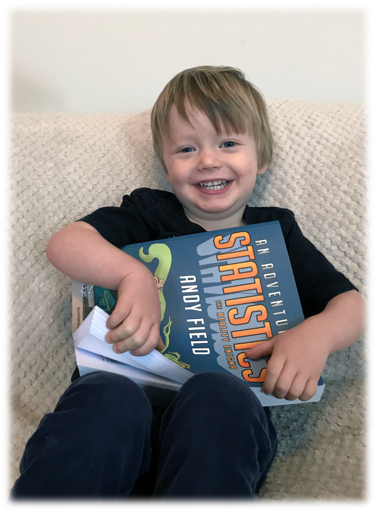
p depends upon sample size
Same effects, different ps
Study 1:
| term | estimate | std.error | statistic | p.value |
|---|---|---|---|---|
| (Intercept) | 12.89 | 0.525 | 24.565 | 0 |
| groupBook | -5.00 | 0.742 | -6.738 | 0 |
Study 2:
| term | estimate | std.error | statistic | p.value |
|---|---|---|---|---|
| (Intercept) | 12.8 | 2.054 | 6.233 | 0.000 |
| groupBook | -5.0 | 2.904 | -1.722 | 0.102 |
Zero effect (approx), significant p
Study 3:
| term | estimate | std.error | statistic | p.value |
|---|---|---|---|---|
| (Intercept) | 12.113 | 0.018 | 660.082 | 0.000 |
| groupBook | 0.052 | 0.026 | 1.997 | 0.046 |
Think about it!
- Why?
p depends upon sample size
Same effects, different ps
Study 1: n = 200
| term | estimate | std.error | statistic | p.value |
|---|---|---|---|---|
| (Intercept) | 12.89 | 0.525 | 24.565 | 0 |
| groupBook | -5.00 | 0.742 | -6.738 | 0 |
Study 2: n = 20
| term | estimate | std.error | statistic | p.value |
|---|---|---|---|---|
| (Intercept) | 12.8 | 2.054 | 6.233 | 0.000 |
| groupBook | -5.0 | 2.904 | -1.722 | 0.102 |
Zero effect (approx), significant p
Study 3: n = 200,000
| term | estimate | std.error | statistic | p.value |
|---|---|---|---|---|
| (Intercept) | 12.113 | 0.018 | 660.082 | 0.000 |
| groupBook | 0.052 | 0.026 | 1.997 | 0.046 |
Problems with NHST
- Tells us nothing about importance because p depends upon sample size
- Provides little evidence about the null (or alternative) hypothesis
- Assumes the null is true
- p > .05 simply means the effect is not big enough to be found, not that it is 0
- p < .05 means that the observed test statistic is unlikely given the null is true
- All or nothing thinking
When p > .05 (not significant)
When p < .05 (significant)
All or nothing thinking
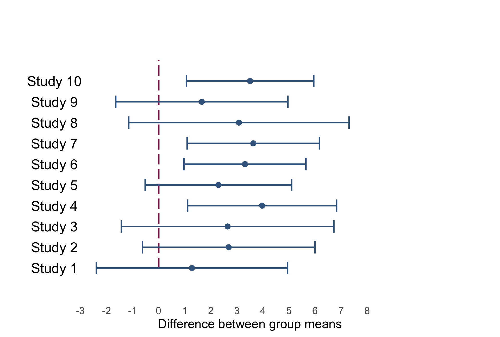
All or nothing thinking
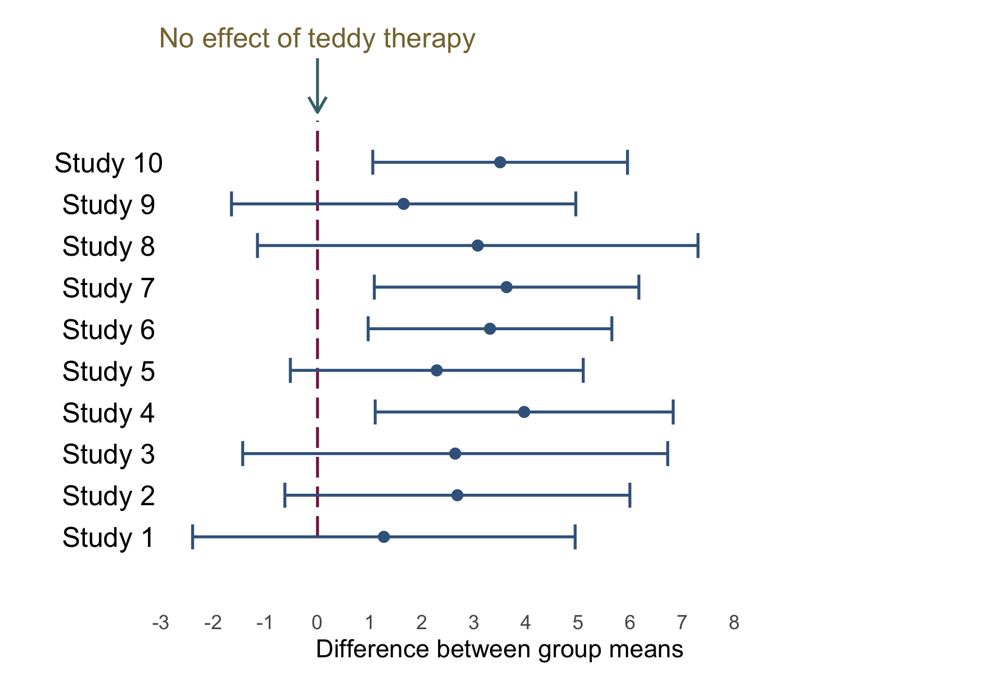
All or nothing thinking
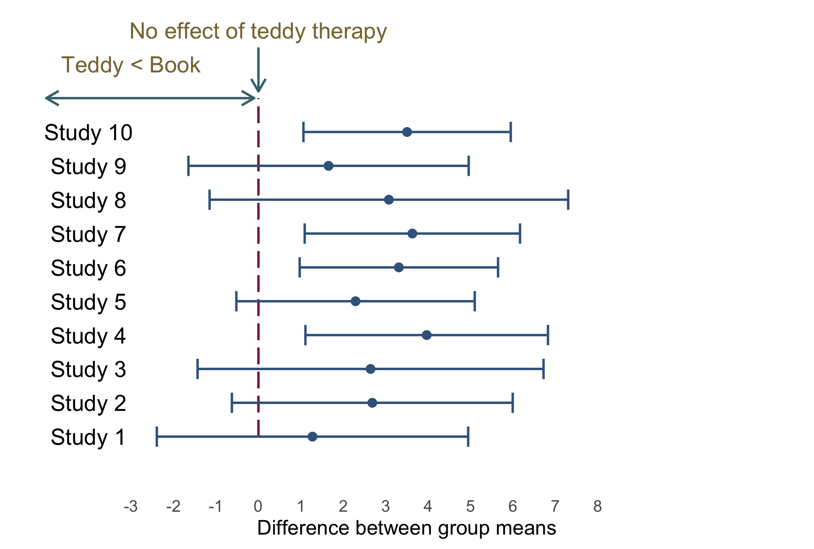
All or nothing thinking
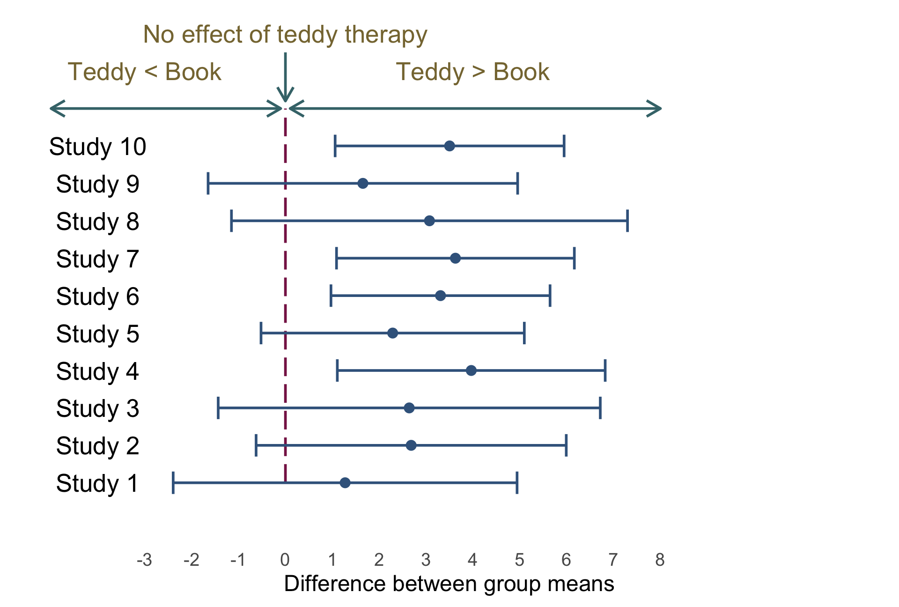
All or nothing thinking
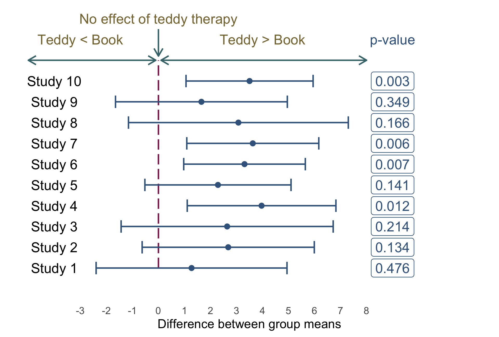
Problems with NHST
- Tells us nothing about importance because p depends upon sample size
- Provides little evidence about the null (or alternative) hypothesis
- Encourages all-or-nothing thinking
- Based on long-run probabilities
- p is the relative frequency of the observed test statistic relative to all test statistics from an infinite number of identical experiments with the exact same a priori sample size
- The type I error rate is in a given study is either 0 or 1, but we don’t know which
Effect sizes
Statis-tip
- The p-value is just one source of information
- It must be placed within the context of the effect size
- Raw effect sizes (b)
- Standardized effect sizes
- Standardized \(\beta\)
- Cohen’s d
- Pearson’s r
- Odds ratio
p depends upon sample size
Same effects, different ps
Study 1: \(\beta\) = -0.86
| term | estimate | std.error | statistic | p.value |
|---|---|---|---|---|
| (Intercept) | 12.89 | 0.525 | 24.565 | 0 |
| groupBook | -5.00 | 0.742 | -6.738 | 0 |
Study 2: \(\beta\) = -0.73
| term | estimate | std.error | statistic | p.value |
|---|---|---|---|---|
| (Intercept) | 12.8 | 2.054 | 6.233 | 0.000 |
| groupBook | -5.0 | 2.904 | -1.722 | 0.102 |
Zero effect (approx), significant p
Study 3: \(\beta\) = 0.01
| term | estimate | std.error | statistic | p.value |
|---|---|---|---|---|
| (Intercept) | 12.113 | 0.018 | 660.082 | 0.000 |
| groupBook | 0.052 | 0.026 | 1.997 | 0.046 |
All or nothing thinking
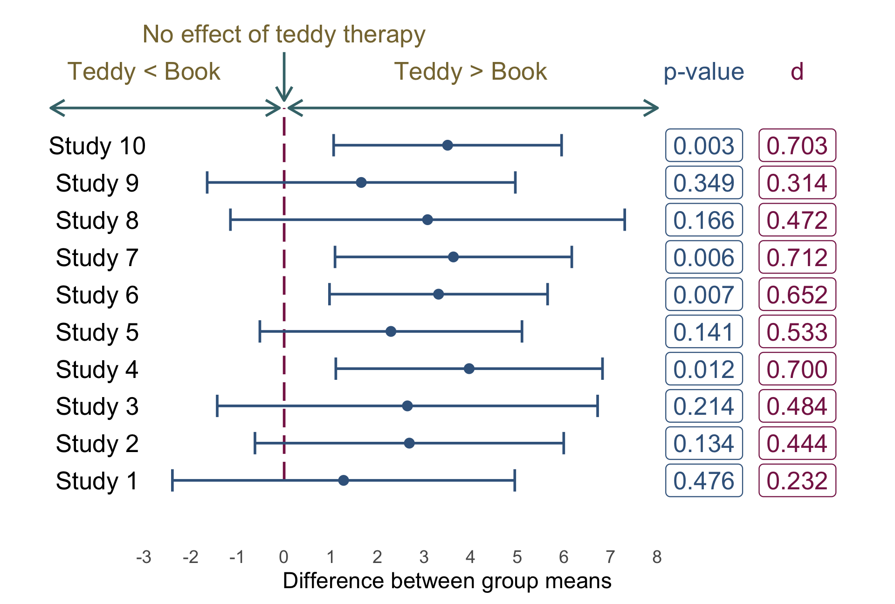
Back to Birnbaum
\[ \text{interest}_i = \hat{b}_0 + \hat{b}_1\text{hard to get}_i +e_i \]
| Parameter | Coefficient | SE | 95% CI | t(126) | p |
|---|---|---|---|---|---|
| (Intercept) | 0.31 | 0.52 | (-0.73, 1.35) | 0.59 | 0.556 |
| hard to get | 0.29 | 0.17 | (-0.04, 0.62) | 1.76 | 0.080 |
Statis-tip
- The p-value suggests a non-significant effect
- Context: what’s the sample size? (n = 128)
- The raw effect (b) tells us as the perception that the other person was hard to get increased by 1 (on a scale from 1-5), 0.29 more expressions of interest were made. (A small practical effect)
- The 95% CI tells us (under certain assumptions) that the change in expressions of interest could be
- As small as -0.04
- As large as 0.62
- Zero (no effect)
- The standardized effect (\(\beta\)) tells us that as the perception that the other person was hard to get increased by 1 standard deviation, expressions of interest changed by 0.16 standard deviations. (A small practical effect)
Summary
- To interpret models we need to look at a range of information
- The raw parameter estimate tells us the effect in units we measured
- The standardized parameter estimate tells us the effect in standard deviation units
- Can be compared across studies that use different measures
- The confidence interval tells us about the uncertainty of our estimates
- The p-value tells us about statistical ‘significance’
- It must be interpretted within the context of the sample size and other information